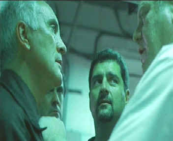

| Limey,
The/(SE)B+,A |
| Artisan/1999/89m/ANA
1.85 |
The
Limey is an exercise in cool filmmaking by one of the young
masters of cinema lexicon. Steven Soderbergh takes this
simple tale of revenge and cuts it up into pieces like a
ceramic mosaic, displaying each piece with the regularity of
recent remembrance. The violence, the cityscapes, the intense
trip through Los Angeles, become fragments in an exercise of
memory, often adding brilliantly to the material, but also
making for much more complex viewing than necessary.
 |
| Lurid
Lighting and bold composition emphasize the director's
thought process. ©Artisan |
Here's the
the direct line approach to the story. Wilson arrives in Los
Angeles after getting a letter telling him that his daughter has
dies in a car accident. Fresh from a nine-year prison stint for
armed robbery, Wilson is not one to waste words or time. He
thinks his Jenny is too good a driver to have perished in some
reckless spin off the road. He will get to the bottom of this
and extract his pound of revenge. That's the whole of it.
Soderbergh's
editing style attempts to replicate the thought process, freely searching back and forth in
time, repeating elements. Coming on
the heels of Out of Sight,
Soderbergh's highly successful film starring George Clooney and
Jennifer Lopez, The Limey experiments further with the
aggressive editing that was a signpost of the earlier film. The
Limey, is as lean in storytelling as the title might
suggest.
Terrence
Stamp is ferocious in the role of Wilson. Every word out of his
mouth is delivered with deliberate danger. Clipped syllables
emphasize the no-nonsense natural of this character. The resolve
of the character is reflected in every close-up of Stamp's eyes.
This is a performance developed fromt he inside out. Peter Fonda
injects Terry Valentine with a sixties fluidity hardened by an
amoral edginess, while Barry Newman is surprising convincing in
an unusual role as Avery, Valentine's head of security .
Communication with
his collaborators is an obvious strength of Soderbergh. Take the
score by Cliff Martinez, for instance. This is Martinez's sixth
collaboration with Soderbergh. Is it a surprise that his cold, aloof, spare,
metronome-beat piano score captures the cool essence of the director's
point of view.
The experimental
nature of the film brings a spontaneity to many of the scenes.
Look at the varied use of available light. The scene in which
Wilson confronts the warehouse crew when looking for Valentine
is lit with lurid fluorescent light. The nightmarish look
marries well with the sense memory editing style. Ed Lachman's
free-form cinematography has the right energy for Soderbergh's
storytelling in The Limey.
There are two audio commentaries to help
illuminate The Limey experience. Soderbergh
and screenwriter Lem Dobbs talk about filmmaking and The Limey
in particular like two old friends enjoying each other's
company. The observations are consistently candid and
there's even a little bit of playful editing distorting the
commentary track to echo the style of the film. An alternate audio
commentary combines commentary on the film and
reflections about the 60's by principals of the film, including
Stamp, Fonda, Barry Newman and Lesley Ann Warren. Included with
the extras is a fine explanation for the techies in the crowd of
how a film becomes a DVD. An examination of the controversy
surrounding delivering DVDs in anamorphic widescreen or 4 x 3
letterbox widescreen is accompanied by a minute plus clip
transferred both ways, letting you play with the comparison and
see the results.
This reference
quality DVD is meticulously transferred to present the
fascinating images accurately. Varied lighting situations
maintain individual integrity. Balanced contrast provides
excellent shadow detail in the darker sequences, but the DVD
really stands out in replicating those unusually lit sequences. Detail is outstanding in all
circumstances. You can look deep into the eyes of Terrence
Stamp without losing a speck of inspiration. A measure of the
color accuracy is as simple as the absolutely perfect transfer
of a necktie. The texture of the silk, the perfect containment
of the stripes, the depth and strength of color. The Dolby
Digital 5:1 surround mix plants details in accurate sections of
the home theater and the chords of the Martinez are surrounding
by the ambiance of the action.
|
|

The
Feature
Archive has articles ranging from Akira
Kurosawa to Blonde
Bimbos and John
Ford.

Fred Astaire and Cyd
Charisse
bring Silk Stockings to life, a remake of Ninotchka,
one of many films successfully turned into musicals by the Hollywood
dream factory. Read all about remakes into musicals by clicking on
the divine dancers.

 Gary
Morris's insightful publication Bright Lights Film Journal
turns the celluloid in films from a unique perspective. Click on the image above for more pure movie views. Gary
Morris's insightful publication Bright Lights Film Journal
turns the celluloid in films from a unique perspective. Click on the image above for more pure movie views.
 A
love of movies drives this small DVD production company, Synapse
Films. Currently specializing in horror and cult films.
Watch for new DVD releases of film festival independents as Synapse
branches out. A
love of movies drives this small DVD production company, Synapse
Films. Currently specializing in horror and cult films.
Watch for new DVD releases of film festival independents as Synapse
branches out.

Looking
for a fix of irreverent flick
dissection. Check out The
Big Combo where four guys rave
and rant about movies.
 Direct
from the corridors of the Home
Theater Forum, Home Theater Talk is
the newest place on the Net to
discuss everything home theater.
Friendly atmosphere and
knowledgeable folks are the secret
ingredients. Direct
from the corridors of the Home
Theater Forum, Home Theater Talk is
the newest place on the Net to
discuss everything home theater.
Friendly atmosphere and
knowledgeable folks are the secret
ingredients.

Specializing in DVD reviews, DVD Authority boasts
almost 400 reviews in an easy to use, elegant,
interface.

The
Movie Poster Archive include extensive poster images from the
films of stars like Susan Hayward, Kirk Douglas, Katharine
Hepburn and many more. This month's featured star is Kirk
Douglas.
|